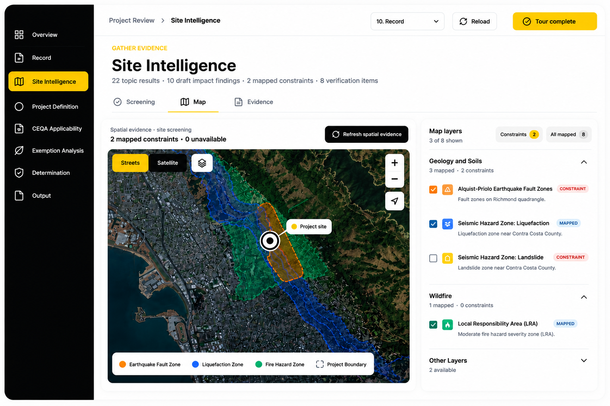
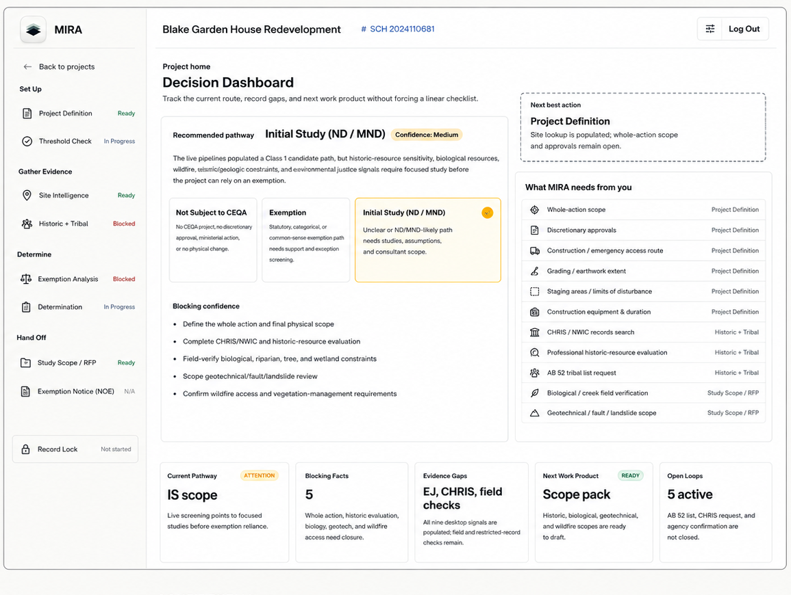
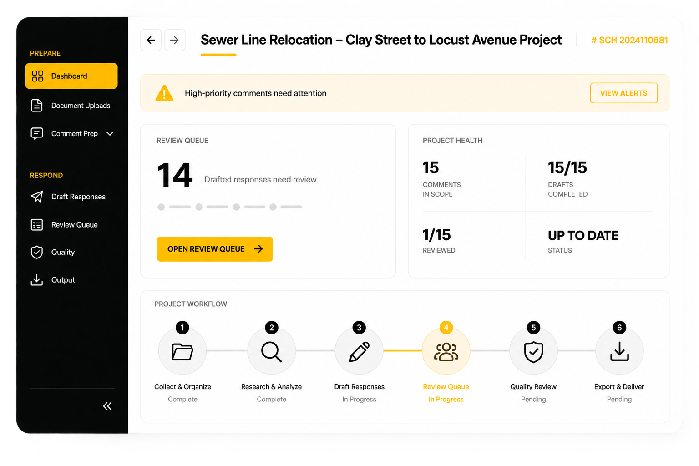

AI-native environmental review · CEQA & NEPA
Envisor unifies research, drafting, and comment response into one defensible record — built for the teams who carry projects from application to determination.
The Mapping Intake & Review Assistant. Give it a project description and an APN, and MIRA identifies concerns, likely petitioners, and mitigation strategies, then carries the project through to a review-ready Initial Study.
Book Demo


Consultants and agencies work from the same connected record, from first draft to final determination.
Run every project on one platform: research, evidence, drafting, and comment response in a single connected record.
Explore for Consultants
Move projects through review with a defensible, traceable record, from applicability to determination.
Explore for Agencies
Consultancies and public agencies — competitors on paper — already building their review record on the same connected system.
No exports, no re-uploading between tools — every module below reads and writes to one project record.

A project description and an APN are all MIRA needs to surface concerns, likely petitioners, and mitigation strategies.
CARA brackets, groups, and assigns responsible parties and timelines, then drafts defensible responses tied to the record.

Public and private data combine into a review-ready environmental report, with every recommendation traced to its source.

Approving agencies get the full administrative record, with mitigation measures monitored over the project's lifetime.
Move faster through complex environmental review without losing the context, traceability, or defensibility the work demands.
Shared intelligence layer. Every module connects to the same project facts, citations, evidence, and administrative record.
Mapping Intake & Review Assistant. From a project description and APN to concerns, petitioners, and mitigation strategies.
CEQA Automated Response Assistant. Bracket, group, assign, and draft defensible responses tied to the record.
Leverage public and private data to generate review-ready environmental reports.
Explore statutes, thresholds, and precedent through semantic search of the CEQA database.
Transform complex environmental documents into ADA-compliant, accessible formats.
A project description and APN are all MIRA needs to identify concerns, likely petitioners, and mitigation strategies.
Leverage public and private data to generate review-ready environmental reports.
Bracket, group, assign responsible parties and timelines, and generate responses with CARA.
Arm approving agencies with the administrative record and monitor mitigation measures over time.
A typical EIR or IS process, compressed.
Billable hours reduced across the review cycle.
Surface evidence invisible to the human eye.
“I actually think the CARA responses are better than what a respected firm prepared.”
Principal PlannerStantec
“This technology can easily reduce the time responding to comments by 70%.”
Principal PlannerEPD Solutions
“Firms without these tools will be uncompetitive within 10 years.”
Brian HarringtonUCOP Planning